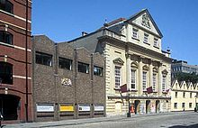

Bristol
Culture
a centre for the arts and sports
Bristol
a centre for the arts and sports
Top
 Bristol's theatre scene includes a large variety of producing theatre companies, apart from the Bristol Old Vic, including Show of Strength Theatre Company, Shakespeare at the Tobacco Factory, acta community theatre, Myrtle Theatre, Cirque Bijou, Desperate Men, Theatre West and Travelling Light Theatre Company. Theatre Bristol is a partnership between Bristol City Council, Arts Council England and local theatre practitioners which aims to develop the theatre industry in Bristol. There are also a number of organisations within the city which act to support theatre makers, for example Equity, the actors union, has a General Branch based in the city, and Residence which provides office, social and rehearsal space for several Bristol based theatre and performance companies. The University of Bristol Drama Department offers undergraduate and post-graduate degrees in performance and screen studies. The University of the West of England offers undergraduate and post-graduate drama and film programmes. Circomedia is a training school for circus and physical theatre skills offering foundation degrees and BTEC courses. In addition there are around 25 active non-professional theatre companies in the Greater Bristol area listed in Bristol City Council's Leisure and Culture database.
| Name | Address | Opened | Use | Notes |
|---|---|---|---|---|
| Albany Centre | Shaftesbury Avenue, Montpelier | 1982 | theatre, comedy, dance | now an artist led cooperative, used as a rehearsal space |
| Alhambra Theatre | 1870 | music hall | also known as the Forester's Music Hall, demolished 1900 | |
| Alma Tavern Theatre | Alma Vale Road, Clifton | 1997 | pub theatre | home to Theatre West, also visiting companies including Bristol Old Vic Theatre School |
| Arnolfini | Narrow Quay | 1975 | theatre, live art, dance, film | arts centre, with adjacent galley spaces and bookshop |
| Bedminster Hippodrome | East Street, Bedminster | 1911 | music hall, theatre | converted into a cinema in 1915 |
| Bierkeller Theatre | All Saints Street | 2012 | theatre, comedy | receiving house, former nightclub |
| Brewery Theatre | North Street, Bedminster | 2009 | theatre, comedy | programmed by the Tobacco Factory Theatre |
| Bristol Hippodrome | St Augustines Parade | 1912 | theatre, musicals, comedy, concerts, opera | receiving house operated by Ambassador Theatre Group |
Top
The music scene is thriving and significant. In 2010, PRS for Music announced that Bristol is the 'most musical' city in the UK, based on the number of PRS members born in Bristol relative to its population. From the late 1970s onwards it was home to a crop of cultish bands combining punk, funk, dub and political consciousness, including The Pop Group, close friends of The Cortinas, who led the City's punk scene from 1976. Bristol's premier fanzine from this time through until early 1978 was Loaded. It featured all of the Bristol bands as well as those who visited the city, some of whom were promoted by the magazine. Ten years later, Bristol was the birthplace of a type of English hip-hop music called trip hop or the Bristol Sound, epitomised in the work of artists such as Tricky, Portishead, Smith & Mighty and Massive Attack. It is also a stronghold of drum and bass with notable bands like the Mercury Prize winning Roni Size /Reprazent and Kosheen as well as the pioneering DJ Krust and More Rockers. The progressive house duo Way Out West also hails from Bristol. This music is part of the wider Bristol Urban Culture scene which received international media attention in the 1990s and still thrives today.
Top
The Bristol City Museum and Art Gallery houses collections of natural history, local archaeology, local glassware, Egyptology, Chinese ceramics and art, including the Bristol School. Touring exhibitions from other galleries are regularly hosted. The City Museum is also responsible for:
Smaller collections include those of Spike Island, the Alexander Gallery, F-block at the School of Creative Arts, Bower Ashton, Bristol Architecture Centre and Glenside Museum. The Bristol Guild of Applied Art also has a small gallery. Science interests are catered for by the At-Bristol complex at Canon's Marsh, which includes 'hands-on' exhibits and a planetarium. Antlers Gallery, a gallery nomadic by design produces temporary exhibitions across varying locations in Bristol.
Top
There are several graffiti artists active in Bristol, probably the most known is Banksy, who produced the album cover for Think Tank by britpop band Blur. Other Bristol graffiti artists include Nick Walker, Sickboy, Inkie, Stars, Lokey, cheo. Massive Attack's Robert Del Naja was also active as a graffiti artist with the nicknames of "3D" and "Delge" in the early 1980s. He appeared in the UK documentary called "Bombin'" alongside Wolverhampton artist and later DJ and producer Goldie. Children of the Can: 25 Years of Bristol Graffiti by Felix Braun (FLX) and Steve Wright, is a book illustrating and documenting the street art scene in the city. 900,000 people visited an exhibition of Banksy's work at the Bristol Museum in 2009. In August 2011 Bristol City Council finally recognised the importance of graffiti to the city's culture by allowing an entire street to be painted by various international street artists. In August 2011 the See No Evil public art event was installed in Nelson Street, transforming it into a walk-through graffiti gallery. Among other works, it includes a 20-metre tall mural.
Top
Bristol's architecture includes many examples of mediaeval, gothic, modern industrial and post-war architecture. Notable buildings include the gothic revival Wills Memorial Building, and the tallest building in the city, St Mary Redcliffe. The city is noted for its Victorian industrial architecture of the Bristol Byzantine style, characterised by deep red and polychrome brickwork and Byzantine style arches. The development of the floating harbour provided a focus for industrial development and the local transport infrastructure including the Clifton Suspension Bridge and Temple Meads railway station, the original part of which was designed by Isambard Kingdom Brunel. The twentieth century saw further expansion of the city, with the growth of the University of Bristol buildings and the aircraft industry. During World War II the city centre suffered from extensive bombing during the Bristol Blitz and redevelopment of shopping centres and office buildings continues into the twenty-first century.
Top
Bristol has a number of notable professional sports teams and a large number of active amateur sports clubs. There are also large numbers of participants in individual sports. The city has two Football League clubs, Bristol City F.C. who play in the second tier and Bristol Rovers F.C. who play in the third tier. Gloucestershire County Cricket Club has its headquarters in the city. Bristol Rugby are currently in the Aviva Premiership Bristol City Council operates a number of sports centres and swimming pools. The city has hosted the2001 IAAF World Half Marathon Championships and stage finishes and starts of the Tour of Britain cycle race. Facilities in Bristol were used as training camps for the 2012 London Olympics.
Top
| RP English | Bristol |
|---|---|
| /ɑː/ as in 'bath' | [a] |
| /ɑː/ as in 'start' | [aɻ] |
| /e/ as in 'dress' | [ɛ] |
| /iː/ as in 'fleece' | [i] |
| /aɪ/ as in 'price' | (rounded) [ɑɪ] |
| /əʊ/ as in 'goat' | [ɔʊ] |
| /eɪ/ as in 'face' | [ɛɪ] |
| /ɔː/ as in 'thought' | [ɔ] |
| /uː/ as in 'goose' | [u] |
| /ɪə/ as in 'near' | [iɻ] |
| /eə/ as in 'square' | [ɛ(ɪ)ɻ] |
| /ɔː/ as in 'force' | [ɔɻ] |
| /ɜː/ as in nurse | [ɝ] |
| /uə/ as in 'cure' | [uɻ] or [ɔɻ] |
| /ə/ as in 'letter' | [ɚ] |
| /ə/ as in 'comma' | [ə] or [ə̹] |
Older Bristolians and those that live in areas which have had less influence from students and immigration, such as Southmead and Hartcliffe, speak a distinctive dialect of English (known colloquially as Brizzle or Bristle). Uniquely for a large city in England, this is a rhotic dialect, in which the r in words like car is pronounced. The most unusual feature of this dialect, unique to Bristol, is the Bristol L (or Terminal L), in which an L sound is appended to words that end in a letter a. Additionally, -al is drawn out as -awl, and an l may be added within a word with an aw. Thus "area" becomes "areawl", "cereal" becomes "cereawl", "drawing" becomes "drawling" etc. This may lead to confusions between expressions like area engineer and aerial engineer which in "Bristle" sound identical. Other examples include 'Americawl' and 'Canadawl', and, when unsure, the answer 'I have no ideal'. In the same way, the Swedish Ikea is known by some as "Ikeawl", and Asda supermarket as "Asdawl". This is how the city's name evolved from Brycgstow to have a final 'L' sound: Bristol.